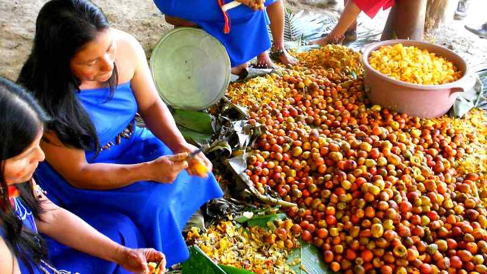
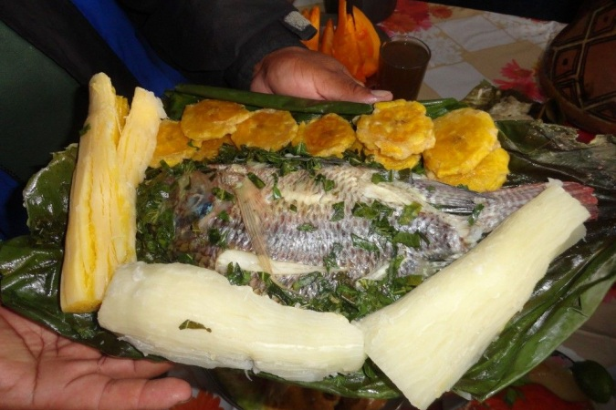
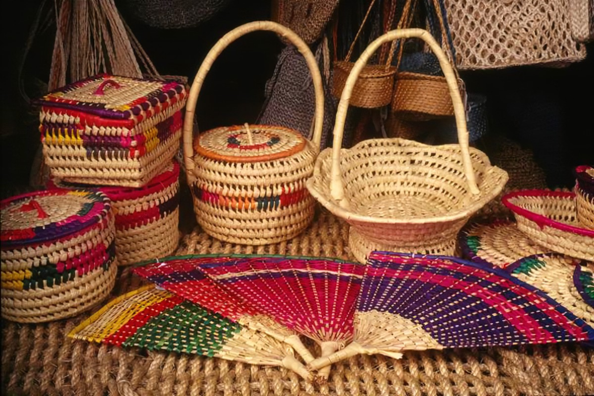
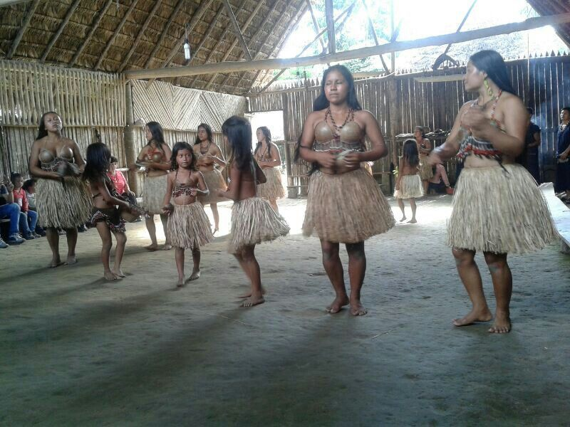

La Fiesta de la Chonta se celebra el 21 de abril y es la celebración más importante del pueblo Shuar en la Amazonía ecuatoriana. Esta festividad evoca el final de la cosecha y se realiza en agradecimiento a la Pacha Mama por la producción anual del uwi o chonta. Durante la fiesta, los asistentes disfrutan de bebidas tradicionales, música, danza y gastronomía típica de la región.
Podemos degustar de platos tales como maitos de tilapia, maitos de pollo o crachama, maitos chontacuros, o chontacuros asados, caldos de gallina criolla, todos estos acompañados con patacones, yuca cocinada y una ensalada de palmito y garabato yuyu.


Elaboran las típicas shigras que son muy peculiares y los llevan como bolsos tanto hombres como mujeres. Hacen collares, pulseras con mullos y semillas autóctonas de la región. tallan flechas, lanzas, cerbatanas, (pucuna – cerbatanas) cerámica, abanicos, adornos, trajes típicos.
Los rituales de Tena son una parte integral de la vida cultural y espiritual de la región. Los Yachacs, por ejemplo, son brujos que forman parte de la tradición familiar y se forman a lo largo de varias generaciones. Estos brujos realizan rituales de ayahuasca para curar y proteger a sus familias, utilizando plantas medicinales y ceremonias.

Página creada por Estefanny Lovera